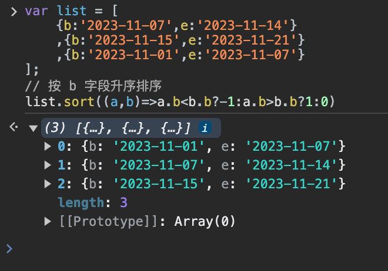

JavaScript sort()メソッド
例
配列の並べ替え：
var fruits = ["Banana", "Orange", "Apple", "Mango"];
fruits.sort();
fruits.sort();
fruits出力結果：
Apple,Banana,Mango,Orange
試してみる »
定義と使い方
sort() メソッドは、配列の要素を並べ替えるために使用します。
並べ替え順序はアルファベットまたは数字で、昇順または降順になります。
デフォルトの並べ替え順序は、アルファベットの昇順です。
注意：数字をアルファベット順に並べると、「40」は「5」の前に来ます。
数字で並べ替えるには、関数を引数として渡す必要があります。
その関数が、数字を昇順で並べるか降順で並べるかを指定します。
これは言葉で説明すると分かりにくいかもしれませんが、このページの下部にある例でさらに理解できます。
注意：このメソッドは元の配列を変更します！
ブラウザサポート


すべての主要ブラウザが sort() をサポートしています。
構文
array.sort(sortfunction)
パラメータ Values
| パラメータ | 説明 |
|---|---|
| sortfunction | オプション。並べ替え順序を指定します。関数である必要があります。 |
戻り値
| Type | 説明 |
|---|---|
| Array | 配列への参照。配列は元の配列上で並べ替えられ、コピーは生成されないことに注意してください。 |
技術詳細
| JavaScript Version: | 1.1 |
|---|
その他の例
例
数字の並べ替え（数字と昇順）：
var points = [40,100,1,5,25,10];
points.sort(function(a,b){return a-b});
points.sort(function(a,b){return a-b});
points の出力結果：
1,5,10,25,40,100
試してみる »
例
数字の並べ替え（数字と降順）：
var points = [40,100,1,5,25,10];
points.sort(function(a,b){return b-a});
points.sort(function(a,b){return b-a});
points の出力結果：
100,40,25,10,5,1
試してみる »
例
文字列の並べ替え（アルファベットと降順）：
var fruits = ["Banana", "Orange", "Apple", "Mango"];
fruits.sort();
fruits.reverse();
fruits.sort();
fruits.reverse();
fruits の出力結果：
Orange,Mango,Banana,Apple
試してみる »
その他の拡張
路人乙
305***8979@qq.com
この sort() メソッドは、上記の例を見ると非常に分かりにくいです。
sort() メソッドには、オプションの引数があり、関数である必要があり、それが呼び出されます。つまりコールバック関数ですね！
コールバック関数の引数は2つあります。最初の引数の要素は、2番目の引数の要素よりも必ず前にあります!!!
このメソッドの並べ替えは、コールバック関数の戻り値によって決まります：
例：
var arr = [9,7,2]; arr.sort(function(a,b){ if(a>b) // 如果 a 大于 b,位置互换 return 1; else //否则，位置不变 return -1; }); // 排序结果: 2,7,9路人乙
305***8979@qq.com
panlf
364***434@qq.com
降順での並べ替え：
試してみる »
panlf
364***434@qq.com
huangyifan
546***203@qq.com
ここで最初のユーザーのノートを訂正します：
var arr = [9,7,2]; arr.sort(function(a,b){ if(a>b) // 如果 a 大于 b,位置互换 return 1; else //否则，位置不变 return -1; });まず、最初の引数は2番目の引数の前にあるのではなく、逆に、引数 b が常に引数 a の前にあります。つまり、最初の比較 a>b は、実際には 7>9 を比較しています。
最初の比較：7>9、結果は false、つまり return -1 となり、このとき a は b の前に移動します。つまり 7 が 9 の前に来るので位置が入れ替わります。このユーザーが言った「a>b で位置が入れ替わる」のではなく、「a<b で位置が入れ替わる」のです。
しかし最終的な出力結果が同じなのは、a、b の順序の理解が逆で、return の結果による位置交換の概念も逆だったため、反対の反対で正しくなり、結果が同じになったのです。
huangyifan
546***203@qq.com
杨shuai
175***8771@qq.com
重複を除いて昇順：
杨shuai
175***8771@qq.com
九億少女の足の臭い
pp7***74714@gmail.com
1. 昇順（小さいものから大きいものへ）
arr.sort(function(a,b){//升序排序 if(a<b){return -1;}//小于0 不换位置，因为现在a在b的前面 a<b，这是我们想要的，所以不换位置 else if(a>b){return 1;}//大于0 换位置,因为升序嘛，肯定是要让小的在前面，而现在a>b，所以要换成b a else{return 0;}//a和b相等，不换位置 });ここでは、比較関数（コールバック関数）を使って並べ替えルールを設定し、戻り値でこのメソッドに、2つの数字を比較するときに位置を交換するかどうかを伝えます：
------------------------------------------------------------------------------------------------------------------------------------------------------------------------------------------------------------------------------------------------------------------------------------------
2. では降順（大きいものから小さいものへ）も簡単です：
arr.sort(function(a,b){ if(a<b){return 1;}//我们需要的是降序，而这里a<b,不是我们想要的，我们想要 b a,所以要换位置→return 1 else if(a>b){return -1;}//这里a>b，刚好是我们需要的，所以不用换位置，直接return -1 else{return 0;}//相等，不换 });ちなみに、a、b が等しい場合は位置を交換しませんが、等しいので交換しても交換しなくても問題ありません。ただし、ブラウザによっては交換するものと交換しないものがありますが、これについては気にする必要はありません。
ある問題が発生しました
実は、ブラウザによってこの sort 並べ替えメソッドの実装は異なります。Firefox はマージソート、Google Chrome は改良版クイックソートを使用しています。
この話を出したのは、最初にある問題に遭遇したからです：
arr = [5,4]; arr.sort(function(a,b){//括号里是回调函数 console.log("a=" +a); console.log("b=" +b); }); console.log(arr);上記のコードは配列の要素を取り出し、実引数として function 関数の仮引数 a、b に渡して出力するとき、ブラウザによって a と b の値が異なります：
Firefox では出力：a = 5; b = 4;
Google Chrome/IE/Edge では：a = 4; b = 5;
------------------------------------------------------------------------------------------------------------------------------------------------------------------------------------------------------------------------------------------------------------------------------------------
エラーが発生する過程：
私は Google Chrome でデバッグしていたので、最初は sort メソッドの結論と同じように、a = 配列の前の値、b = 配列の後の値、つまり a = 5、b = 4 だと思っていました。
しかし Google Chrome での出力は a = 4、b = 5 でした。そのときちょうど上に書いてあった人のコメントを見て、「b は常に a の前にあるはずだ。つまり arr = [最初, 2番目] なら、要素を取り出すとき b = 最初、a = 2番目になる」と思いました。
それでさらに考えてみると、関数内の戻り値のルールも変える必要があるのではないかと思いました：
しかしもともと昇順を実装するつもりだったのに、ブラウザでの実行結果は降順でした。（もちろん Firefox でも同じく降順でした）
長い間悩みましたが、a、b の値を出力していくつかのブラウザで試したところ、ついに Firefox で手がかりを見つけました：
Firefox では出力：a = 5; b = 4;
Google Chrome/IE/Edge では：a = 4; b = 5;
私は徐々に気づきました。この sort 並べ替えメソッドを使うとき、配列要素を代入する際に最初の要素を a に割り当てるのか b に割り当てるのかを、自分で考える必要はないかもしれないと。
多くの人のブログを検索すると、数年前の Google Chrome のデバッグコードでは、上記の a b の出力も a = 5; b = 4; でした。
ただ、その後のアップデートと改良で、現在のように a=4 b=5 に変わっただけです。
しかし、Firefox でも Google Chrome でも、最終的な並べ替えの結果は同じで、どちらも昇順または降順になります。
したがって、結論として、私たちは a、b（前の要素が a に渡されるのか、後ろの要素が a に渡されるのか）を気にする必要はありません。
私たちが覚えておくべきことは次のとおりです：
a が前、b が後ろ。a<b のときは位置を交換せず、return -1;（昇順が必要なとき）
a>b のときは位置を交換し、return 1;（昇順が必要なとき）
a=b のときは位置を交換せず、return 0;
------------------------------------------------------------------------------------------------------------------------------------------------------------------------------------------------------------------------------------------------------------------------------------------
降順が必要なときは、return 1 と return -1 を入れ替えるだけです
最終的な上級編：そのまま昇順にするなら：return a-b;
（昇順の場合、a<b なら、戻り値は0 より小さくなり、これは望ましい状態なので位置を交換しません。a>b なら 0 より大きくなり、望ましくないので位置を交換します）
同様に、降順：return b-a;
九億少女の足の臭い
pp7***74714@gmail.com
闻丝卡达
114***4761@qq.com
デフォルトでは、sort() メソッドは配列の要素を昇順に並べ替えます。つまり、最小の値が最初に来て、最大の値が最後に来ます。並べ替えを実現するために、sort() メソッドは各配列要素の toString() 変換メソッドを呼び出し、取得した文字列を比較して並べ替え方を決定します。配列の各要素が数値であっても、sort() メソッドは文字列を比較します。次のようになります。
このように、例の中の値の順序に問題がなくても、sort() メソッドはテスト文字列の結果に基づいて元の順序を変更します。数値の 5 は 10 より小さいですが、文字列比較では "10" が "5" の前に来るため、配列の順序が変更されます。言うまでもなく、この並べ替え方法は多くの場合、最適な方法ではありません。そのため、sort() メソッドは比較関数を引数として受け取ることができ、どの値がどの値の前に来るかを指定できます。
比較関数は2つの引数を受け取ります。最初の引数が2番目の引数の前に来るべき場合は負の数を返し、2つの引数が等しい場合は0を返し、最初の引数が2番目の引数の後に来るべき場合は正の数を返します。以下は単純な比較関数の例です。
function compare(value1, value2) { if (value1 < value2) { return -1; } else if (value1 > value2) { return 1; } else { return 0; } }この比較関数は、sort() メソッドに引数として渡すだけで、ほとんどのデータ型に適用できます。次の例のようになります。
比較関数を sort() メソッドに渡すと、数値は正しい昇順を保ちます。もちろん、比較関数が返す値を入れ替えるだけで、降順の並べ替え結果を生成することもできます。
function compare(value1, value2) { if (value1 < value2) { return 1; } else if (value1 > value2) { return -1; } else { return 0; } } var values = [0, 1, 5, 10, 15]; values.sort(compare); alert(values); // 15,10,5,1,0闻丝卡达
114***4761@qq.com
Casey
lil***jian@sina.com
上記の説明はどれも素晴らしいです。ここではオブジェクト配列の並べ替えを補足して、皆さんの理解を助けます：
var list = [ {b:'2023-11-07',e:'2023-11-14'} ,{b:'2023-11-15',e:'2023-11-21'} ,{b:'2023-11-01',e:'2023-11-07'} ]; // 按 b 字段升序排序 list.sort((a,b)=>a.b<b.b?-1:a.b>b.b?1:0)
Casey
lil***jian@sina.com